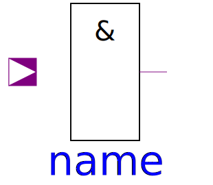
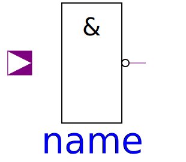
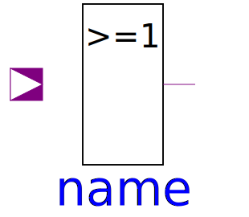

Basic contains the basic gates according to standard logic. The components of Basic calculate their results using the corresponding truth tables. They do not contain any delay components.
| Name | Description |
|---|---|
| Not logic component without delay | |
|  And | And logic component with multiple input and one output |
|  Nand | Nand logic component with multiple input and one output |
|  Or | Or logic component with multiple input and one output |
| Nor logic component with multiple input and one output | |
| Xor logic component with multiple input and one output | |
| Xnor logic component with multiple input and one output |